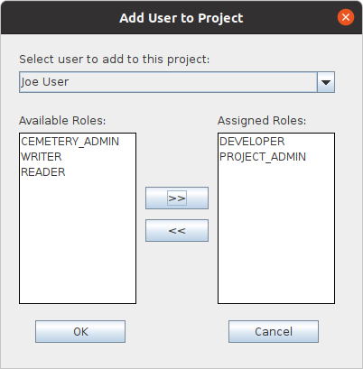

|
QVCSOS Enterprise -- Installation and Getting Started...Step 9: Add users to the new project:When you added users to the server in Step 7, you defined user names and user passwords. User names and passwords allow the server to authenticate the user. However, you did not define the activities that the user(s) are authorized to perform. You do that in this step. Select the project node that you defined in Step 8. In the user pane, you will see the list of users that are authorized to access that project. To begin with, just the ADMIN user will appear in the list. Select the top node on the user pane (it will have the project name and users), right click and select the Add user... menu option. On the resulting Add user to Project dialog, select a user name from the drop down combo box at the top of the dialog. Then, holding down the CTRL key, select the DEVELOPER, and PROJECT_ADMIN roles from the "Available Roles" list box. Then click the >> button to assign those roles to the given user. To view files in the project, a user must have the READER and/or DEVELOPER role; to be able to make any changes to files of the project, the user must also have the WRITER role and/or the DEVELOPER role. A user with the PROJECT_ADMIN role can create directories, edit project properties, and assign user roles for a project. (See here for a full description of which role is required to perform a specific action).  Only a user with the PROJECT_ADMIN role can create directories on the server, so you should make sure that at least one user is given the PROJECT_ADMIN role. You can exit the admin application at this time. You can use it as needed to perform administrative tasks like defining projects, adding/deleting users, resetting user passwords, associating user roles with known projects, etc. |
| For the source code, see https://github.com/jimv39/qvcsos |